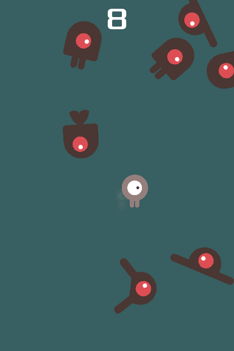

Godot's "Your first 2D game", retitled for Walker. A small, complete game: survive, score by time, one hit ends the run.
OBSERVED INFERRED MISSING
No gate signed. No human playtest. → GDD.md

Upstream screenshot, 480×720 portrait (godot/README.md:25). Design art, not a Walker capture. Portrait is the native layout.
OBSERVED The repro log FAILed "horizontal movement resets orientation". player.gd:34 now resets rotation. The fixed log passes 14/14.
input-repro-20260924.log → input-fixed-20260924.log
| Value | Source |
|---|---|
| Player 400 px/s | player.gd:5 |
| Spawn every 0.5 s | main.tscn:31 |
| Creep 150–250 px/s | main.gd:43 |
| Grace 2 s | main.tscn:36 |
Q-01 Keep as tutorial game, or extend?
Q-02 Player fantasy?
Q-05 Difficulty ramp?
Q-03, Q-04, Q-06, Q-07 in decisions.md
One verb, one rule, one number. It's a real game. Flat difficulty is the design debt. The rotation fix is the story, because it has a before and an after.